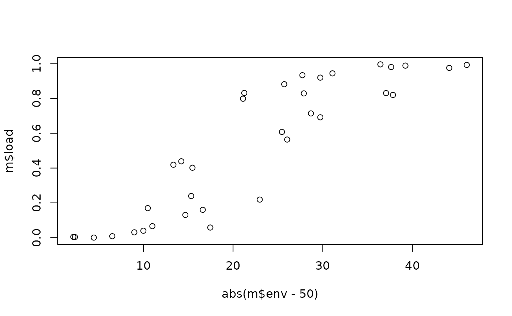

Maladaptation of populations in a simulation with evolution
Source:R/maladaptation.R
maladaptation.RdMeasures how far the mean phenotype of each population is from the environment of its site
in a simulation run with evolution (evolution_control()), and the share of growth lost
because of that distance (the lag load).
Arguments
- x
A simulation from
simulate_metacommunity()orsimulate_evolving_metacommunity()run withevolution.- step
NULL(the default) for the last step, or one or more steps kept withrecord_steps.
Value
A data frame with one row per population present: step (with several steps),
site, species, abundance, then env, phenotype and deviation (\(E - \bar
p\)), or with several traits env_<trait>, phenotype_<trait> and
deviation_<trait> for each trait, then distance (\(|d| / \sqrt{\sigma^2 + P}\), or the Mahalanobis distance) and load.
Details
The phenotype of a population is its genetic mean plus its plastic response, \(\bar p =
\bar z + b (E - E_0)\), and its deviation is \(d = E - \bar p\). Under the Gaussian niche of growth_rates(), with niche breadth
\(\sigma\) and phenotypic variance \(P\) around the mean, the growth of the
population is that of a population with the same variance centred on the environment times
$$1 - L = \exp\left(-\frac{d^2}{2 (\sigma^2 + P)}\right),$$
so the load \(L\) goes from 0 (the mean phenotype matches the site) towards 1. It does
not depend on r_max and it excludes the cost of the variance itself (the standing load).
With several evolving traits (one per niche axis), \(d^2 / (\sigma^2 + P)\) becomes the squared Mahalanobis distance \(d^\top (\Omega + P)^{-1} d\) over the axes with a finite niche breadth, which also counts the covariances among
traits; axes with sigma = Inf add a deviation but no load. For evolving metacommunities
(simulate_evolving_metacommunity()), the population of a species in a site can hold
several lineages: its phenotype is their mean weighted by abundance and \(P\) adds the
variance among them, so the load is that of a single Gaussian population with that mean and
variance, an approximation of the mean load of the lineages.
Maladaptation can come from gene flow (immigrants with the means of other sites; see also
migrant_load in simulate_metacommunity()), drift and founder effects in small
populations, a lag behind an environment that changes (env_time), genetic constraints
(little genetic variance in the direction of selection, see genetic_matrices()) and
plasticity of the wrong sign or size.
See also
Other simulate metacommunities:
as_metacommunity(),
colonisation_history(),
evolution_control(),
genetic_matrices(),
growth_rates(),
logistic_gradients(),
mc_dynamics(),
persistence(),
range_history(),
simulate_evolving_metacommunity(),
simulate_logistic(),
simulate_metacommunity(),
simulate_static(),
speciation_control()
Examples
set.seed(1)
land <- landscape_grid(6, disp_scale = 0.5)
traits <- data.frame(optimum = 50, sigma = 15, r_max = 4, row.names = "sp1")
alpha <- matrix(0.05, dimnames = list("sp1", "sp1"))
sim <- simulate_metacommunity(land, traits, alpha, dispersal = 0.1, n_steps = 100,
evolution = evolution_control(genetic_var = 4))
m <- maladaptation(sim)
head(m)
#> site species abundance env phenotype deviation distance load
#> 1 site1 sp1 59 43.46595 45.40789 -1.941941 0.12832708 0.008200114
#> 2 site2 sp1 16 64.22883 47.96264 16.266185 1.07489978 0.438815060
#> 3 site3 sp1 2 77.89147 49.43700 28.454463 1.88032385 0.829293383
#> 4 site4 sp1 38 60.49333 51.26760 9.225728 0.60965328 0.169592354
#> 5 site5 sp1 35 47.81180 49.24181 -1.430003 0.09449729 0.004454916
#> 6 site6 sp1 36 34.66835 45.85711 -11.188763 0.73937428 0.239163783
# sites far from the regional mean keep immigrants from the centre: more maladapted
plot(abs(m$env - 50), m$load)
